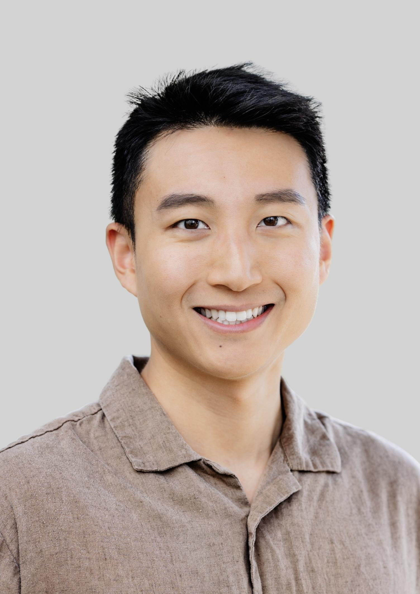

|  | I am an Assistant Professor in the School of Data Science at the Chinese University of Hong Kong, Shenzhen (CUHK-Shenzhen). My research interests lie in optimization and its applications in machine learning and power systems. Before joining CUHK-Shenzhen, I am a postdoctoral researcher at Argonne National Laboratory. I completed my Ph.D. in Computer Science at ETH Zurich, under the supervision of Niao He. I received a master's degree in Industrial Engineering from the University of Illinois Urbana-Champaign and a bachelor’s degree in Applied Mathematics and Economics from UCLA. Email: yangjunchi@cuhk.edu.cn |
I am seeking highly motivated Ph.D. students, Master’s students, and interns with a strong background in mathematics and/or solid programming skills. If you are interested in mathematical optimization and its applications in machine learning and power systems, please feel free to email me your CV and any other supporting documents. Students from diverse fields, including mathematics, electrical engineering, computer science, and related disciplines, are warmly encouraged to apply.
[2024.6] I am attending the 2024 IEEE Power & Energy Society General Meeting in July.
[2024.2] I am attending the 2024 Conference on Innovative Smart Grid Technologies (ISGT) in February and the INFORMS Optimization Society Conference in March.
[2024.2] My Ph.D. Thesis “Towards Near-Optimal and Adaptive Algorithms in Minimax Optimization” is now available online. Check it out.
[2024.1] Our paper “Parameter-Agnostic Optimization under Relaxed Smoothness” is accepted to AISTATS 2024.
[2024.1] I started as a postdoctoral researcher at Argonne National Laboratory.
[2023.09] Two co-first-authored papers are accepted to NeurIPS 2023. One of them is selected to be a spotlight paper.
[2023.09] I've successfully defended my Ph.D. thesis. Grateful for this academic journey.
(* indicates equal contribution)
Accelerating Distributed Optimization: A Primal-Dual Perspective on Local Steps
Junchi Yang, Murat Yildirim, Qiu Feng.
Manuscript 2024 [arXiv]
Parameter-Agnostic Optimization under Relaxed Smoothness
Florian Hübler, Junchi Yang, Xiang Li, Niao He.
AISTATS 2024 (preliminary version in NeurIPS OPT Workshop 2023) [arXiv]
Optimal Guarantees for Algorithmic Reproducibility and Gradient Complexity in Convex Optimization
Liang Zhang*, Junchi Yang*, Amin Karbasi, Niao He.
NeurIPS 2023 (spotlight). [arXiv] [NeurIPS]
Two Sides of One Coin: the Limits of Untuned SGD and the Power of Adaptive Methods
Junchi Yang*, Xiang Li*, Ilyas Fatkhullin, and Niao He.
NeurIPS 2023. [arXiv] [NeurIPS]
TiAda: A Time-Scale Adaptive Algorithm For Nonconvex Minimax Optimization
Xiang Li, Junchi Yang, and Niao He.
ICLR 2023 (preliminary version in NeurIPS OPT Workshop 2022) [arXiv] [ICLR]
Nest Your Adaptive Algorithm for Parameter-Agnostic Nonconvex Minimax Optimization
Junchi Yang*, Xiang Li*, and Niao He.
NeurIPS 2022 [arXiv] [NeurIPS]
Faster Single-Loop Algorithms for Minimax Optimization without Strong Concavity
Junchi Yang, Antonio Orvieto, Aurelien Lucchi, and Niao He.
AISTATS 2022 [arXiv] [AISTATS]
The Complexity of Nonconvex-Strongly-Concave Minimax Optimization
Siqi Zhang*, Junchi Yang*, Cristobal Guzman, Negar Kiyavash and Niao He.
UAI 2021 [arXiv] [UAI]
A Catalyst Framework for Minimax Optimization
Junchi Yang, Siqi Zhang, Negar Kiyavash, and Niao He.
NeurIPS 2020 [NeurIPS]
Global Convergence and Variance Reduction for a Class of Nonconvex-Nonconcave Minimax Problems
Junchi Yang, Negar Kiyavash, and Niao He.
NeurIPS 2020 [arXiv] [NeurIPS]
Towards Near-Optimal and Adaptive Algorithms in Minimax Optimization
Doctoral Thesis. ETH Zurich. 2023 [ETH Research Collection]
(Chapter 2 of the thesis presents our complete Catalyst framework for unbalanced minimax problems. The full results were initially presented at the CSL Student Conference 2021, and portions appeared in our NeurIPS 2020 and UAI 2021 papers.)
2024 INFORMS Optimization Society Conference (IOS). Title: “Optimal Guarantees for Algorithmic Reproducibility and Gradient Complexity in Convex Optimization”.
20th EUROpt Workshop 2023. Title: “From SGD to Adaptive Methods: Benefits of Adaptive Gradient Techniques”.
SIAM Conference on Optimization 2023 (OP23). Title: “Adaptive Algorithms for Nonconvex Minimax Optimization”.
CSL Student Conference 2021. Title: “A Catalyst Framework for Minimax Optimization”.
INFORMS 2020 Annual Meeting. Title: “Simple and Efficient Algorithms for Classes of Nonconvex Minimax Optimization”.
Optimization for Data Science. ETH Zurich. 2022 Spring, 2023 Winter.
Foundations of Reinforcement Learning. ETH Zurich. 2021 Fall.
Analysis of Data. UIUC. 2019 Fall.
Reviewer for NeurIPS, ICML, ICLR, AISTATS and TMLR.
I received ISE Student Fellowship at UIUC 2017-2018.
Top reviewer for NeurIPS 2022.
I play volleyball and used to play badminton and table tennis. I am learning snowboarding and tennis.